Задача: При помощи цвета выявить геометрические особенности фигур и их связи между собой, а также с окружающими поверхностями.
Авторы работ: Сныткина Т., Новикова Ю., Фоменок Ю., Цвирко С., Протасеня Е., Пастушенко П.
Просмотр 31 января 2005
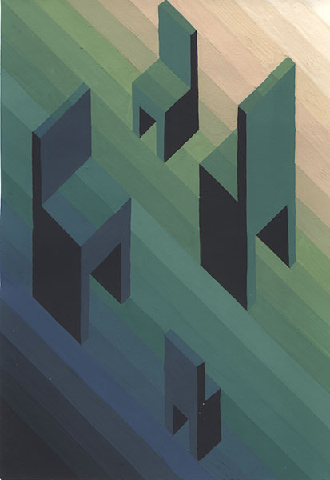
Стулья. Из мрака и света
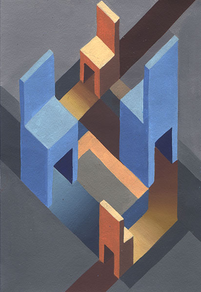
«—» Два поколения
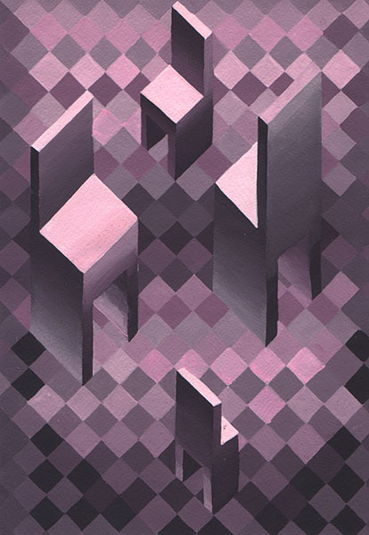
«—» Сложная игра
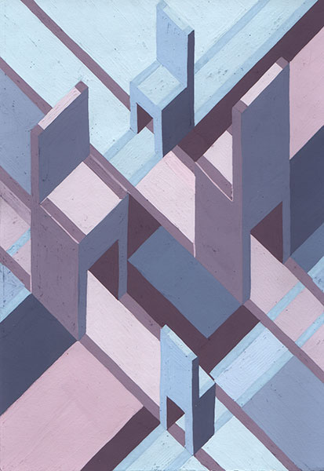
«—» Четкие ритмы
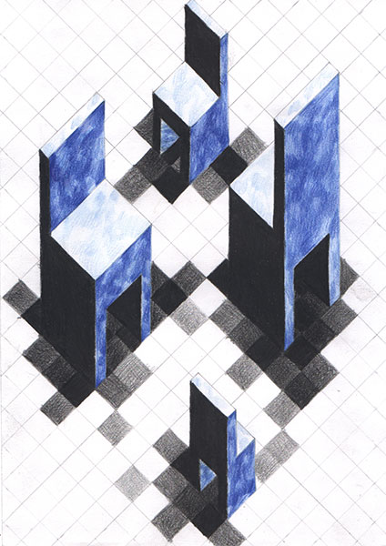
«—» Тождество индивидуумов
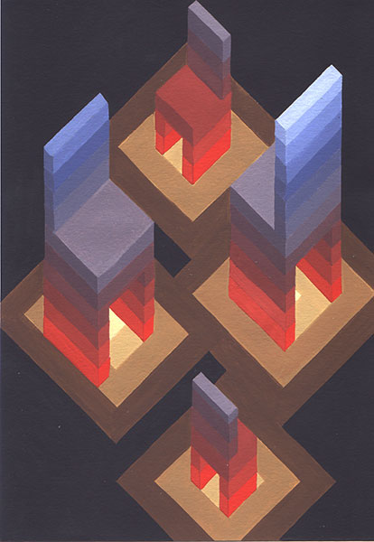
Стулья. Единодушие
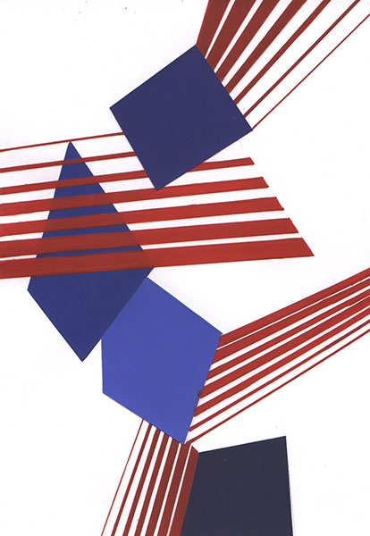
Кубы. Разносторонность личности
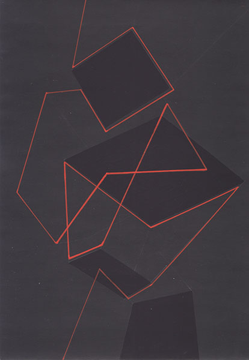
Пирамиды. Конфликт
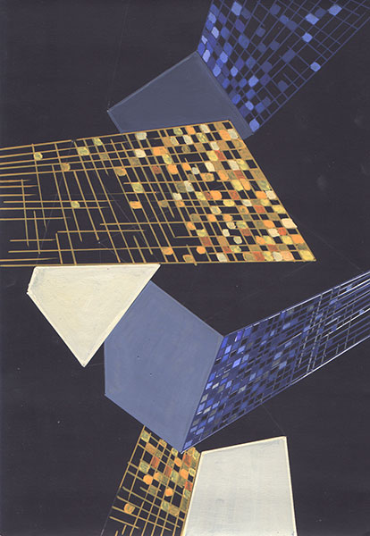
Пирамиды
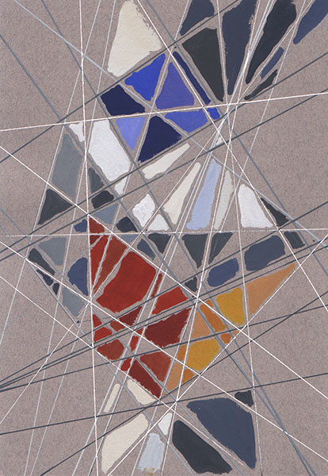
"Прогноз погоды на завтра"
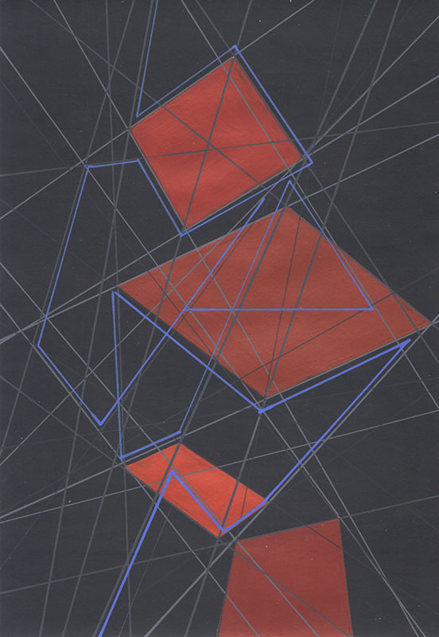
Усеченные пирамиды
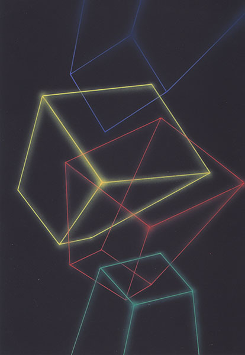
Пирамиды
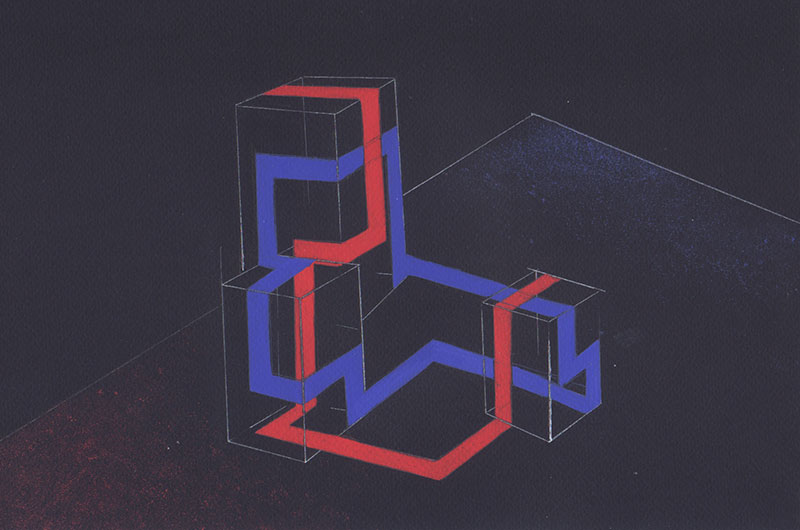
Три куба
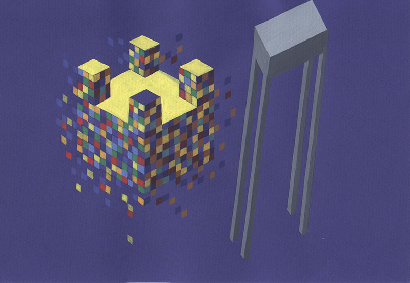
Легкое-тяжелое
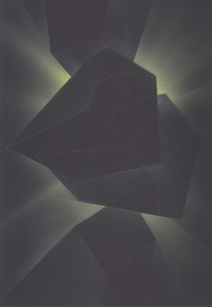
Контур-ажур
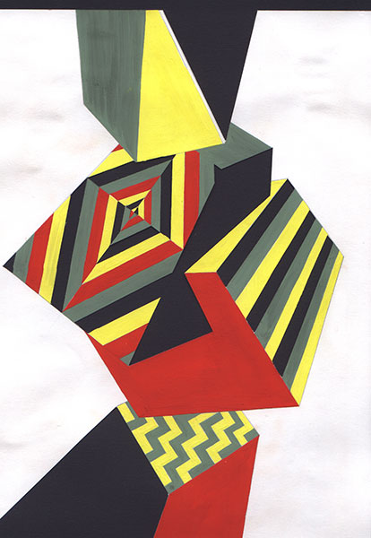
Рэггей-мотивы
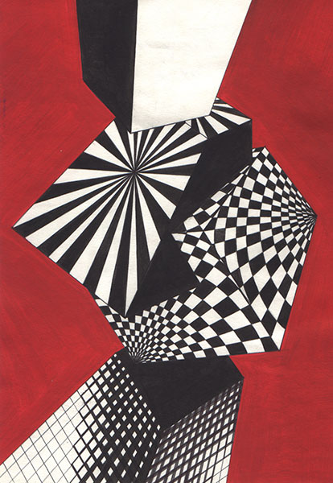
Шахматные иллюзии
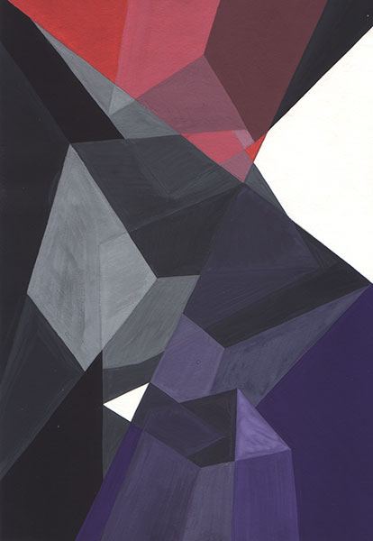
Кровавая урбанизация